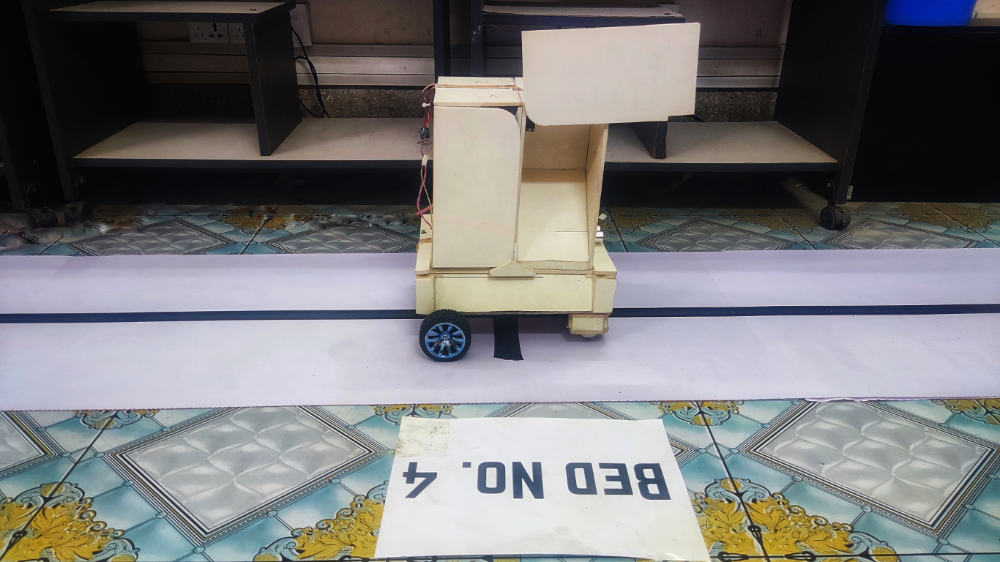
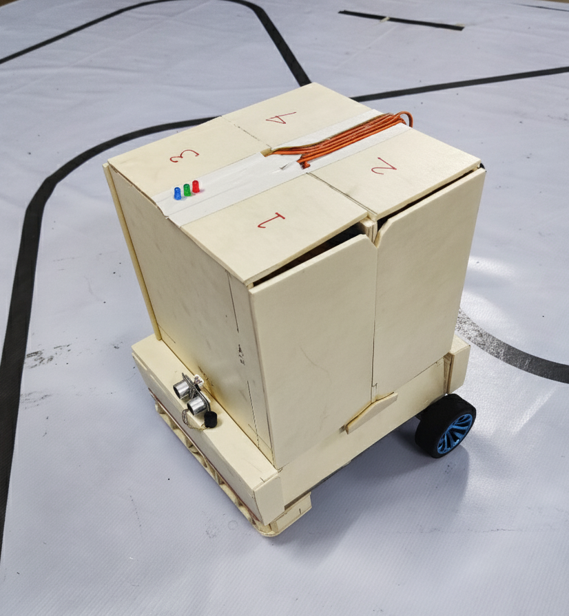
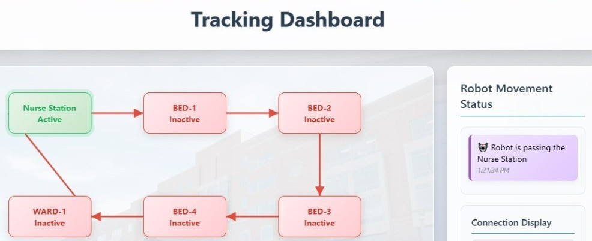
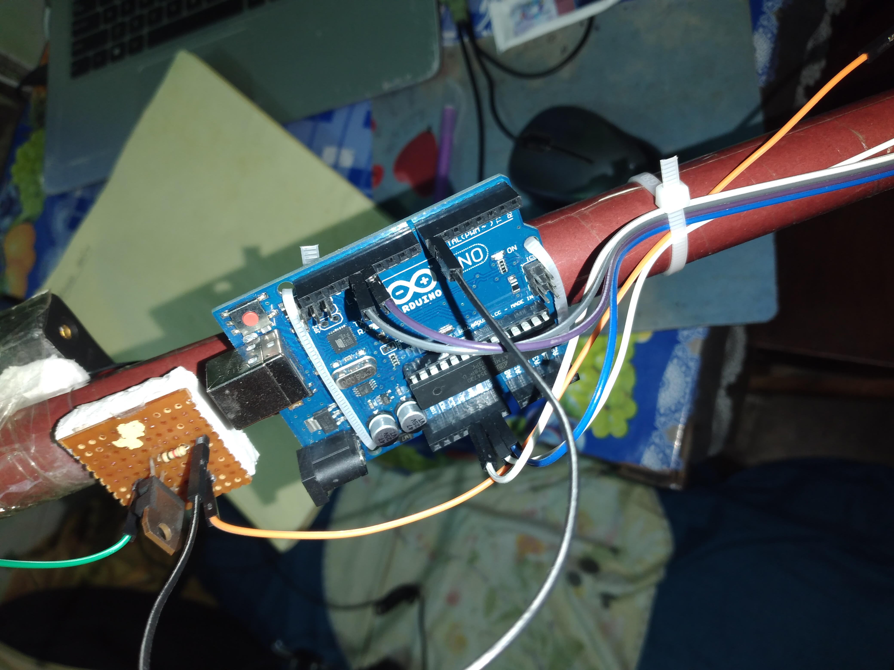
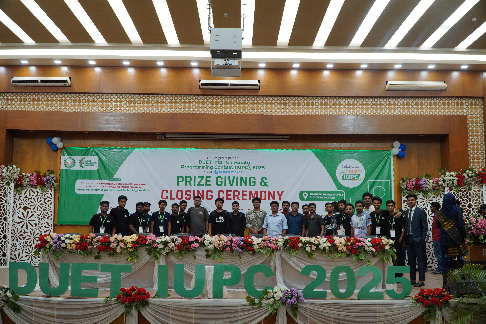
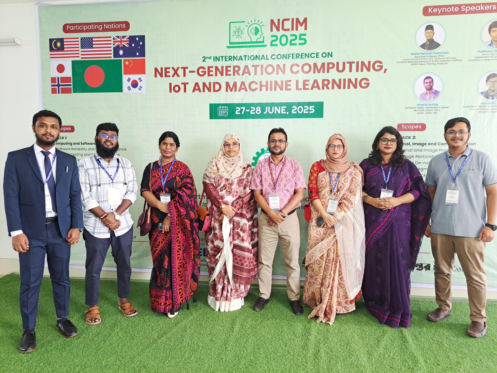
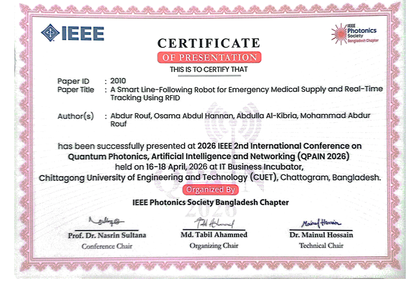

Specializing in Machine Learning, Deep Learning, Computer Vision, Medical Image Analysis, Explainable AI (XAI), NLP, LLMs, RAG, and MLOps — building intelligent, explainable systems for real-world impact.
Learn about my research journey, work approach, and what drives my passion for AI
I am a dedicated researcher and quick learner who strives to acquire
new knowledge daily from real-life problems. My approach to work is
focused and methodical — I prefer to concentrate on one task at a time,
dedicating all my attention to it until completion. This focused approach
allows me to solve problems effectively and efficiently.
My research spans Computer Vision, Medical Image Analysis, Explainable AI,
NLP, Multimodal AI, LLMs, RAG, and MLOps. I completed professional
internships at bongoDev, Byte Care Limited, Phitron, and the ICT Division
of Bangladesh, developing solutions in AI-driven healthcare, agriculture,
and intelligent systems.
Professional Focus
I believe in the power of explainable AI to solve real-world problems,
particularly in medical imaging and sustainable agriculture. My work
focuses on creating practical, interpretable, and efficient solutions
that can make a meaningful impact on society.
Focused
Full concentration on one task at a time for high-quality results.
Systematic
Breaking complex problems into manageable components.
Learning
Continuously acquiring new skills applied to real challenges.
Education
Academic Journey
My qualifications and academic background
Sep 2021 – Oct 2025
B.Sc. in Computer Science and Engineering
Dhaka University of Engineering & Technology (DUET), Gazipur
Thesis: A Smart Line-Following Robot for Emergency Medical Supply and Real-Time Tracking using RFID Supervisor: Prof. Mohammad Abdur Rouf, PhD
Diploma
Diploma in Computer Technology
Tangail Polytechnic Institute, Tangail, Bangladesh
Gained practical knowledge in computer hardware, software, networking, and programming.
S.S.C
Secondary School Certificate — Science
Bangshai School and College, Mirzapur, Tangail, Bangladesh
Completed my Secondary School Certificate (S.S.C) in the Science group. Built a strong foundation in mathematics, physics, chemistry, and biology while developing early interest in computer technology and problem-solving skills.
Research Interests
Areas I Explore
Focus areas for current and future research
AI for Agriculture & Plant Health
Deep learning for plant disease detection from leaf images, nitrogen status classification, chlorophyll-based quality assessment, and precision agriculture solutions for crops like rice, potato, onion, eggplant, and brinjal.
Medical Image Analysis
Deep learning for medical imaging such as CT and X-ray analysis, organ segmentation, tumor detection, and lung disease classification with clinical decision support systems.
Computer Vision & Explainable AI
Building interpretable deep learning models with XAI techniques for high-stakes domains — providing transparency, visual explanations, and trust for real-world deployment.
NLP, LLMs & Retrieval-Augmented Generation
Natural Language Processing, Large Language Models, multimodal AI, and RAG-based systems for intelligent guidance — including farmer assistance and clinical decision support.
MLOps & Production Deployment
Machine Learning Operations, model monitoring, scalable deployment, and production-ready AI pipelines using MLflow, Docker, and cloud platforms.
Publications
Research Publications
Click "View Details" to read the full abstract of each paper
Published · MDPI 2026
Global-Local Feature-Based Rice Leaf Disease Classification Using Two-Stream Deep Neural Network Feature Fusion
Md Nahidur Rahaman, Abdullah Al Mamun, Md. Kamal Hossen, Abdur Rouf, Tumpa Rani Shah, Jungpil Shin, Mohd. Nizam Husen, and Abu Saleh Musa Miah
Computers, MDPI, 2026
Two-stream deep neural network feature fusion approach for rice leaf disease classification using global and local features.
Published · IEEE QPAIN 2026
A Smart Line-Following Robot for Emergency Medical Supply and Real-Time Tracking using RFID
Abdur Rouf, Osama Abdul Hannan, Abdulla Al-Kibria, and Mohammad Abdur Rouf
2026 IEEE 2nd Int'l Conf. on Quantum Photonics, AI & Networking (QPAIN)
Autonomous robot for emergency medical supply delivery with RFID-based real-time tracking.
Accepted · IEEE BECITHCON 2026
DLRA-MSTFNet: Explainable Lung Disease Classification from Chest X-ray Images with RAG-Based Clinical Guidance
Md Nahidur Rahaman, Abdur Rouf, Raju Mia, S. M. Abdullah Al Shuaeb, and Ferdaus Anam Jibon
2026 IEEE Int'l Conf. on Biomedical Engineering, Computer and IT for Health (BECITHCON)
Explainable lung disease classification with retrieval-augmented clinical guidance.
Under Review · Image and Vision Computing
A Dynamic Lesion-Aware Multi-Scale Deep Learning Framework for Explainable Nitrogen Status Classification in Eggplant Leaves
Abdur Rouf, Md Nahidur Rahaman, Raju Mia, and S. M. Abdullah Al Shuaeb
Image and Vision Computing, 2026
Lesion-aware multi-scale framework for nitrogen status classification in eggplant leaves with explainability.
accepted · IEEE CSDE 2026
A Hybrid Multi-Backbone Deep Learning Framework with Learnable Attention Fusion for Explainable Potato Leaf Disease Detection
Md. Nahidur Rahaman, Abdur Rouf, S. M. Abdullah Al Shuaeb, Jahid Hasan Rony, Mohammad Ariful Islam, Muhammad Aminur Rahaman, Saiful Saiful, and Abdullah Al Mamun
IEEE CSDE 2026
Hybrid multi-backbone framework with learnable attention fusion for potato leaf disease detection.
accepted · IEEE CSDE 2026
An Intelligent Multi-Scale Lesion Attention Transformer Framework with Retrieval-Augmented Farmer Guidance for Onion Leaf Disease Diagnosis
Abdur Rouf, Md Nahidur Rahaman, S. M. Abdullah Al Shuaeb, Jahid Hasan Rony, Mohammad Ariful Islam, Muhammad Aminur Rahaman, Saiful Saiful, and Abdullah Al Mamun
IEEE CSDE 2026
Lesion attention transformer with RAG-based farmer guidance for onion leaf disease diagnosis.
Under Review · Data in Brief
An Image-Based Brinjal Dataset for Nitrogen Deficiency Detection and Chlorophyll-Based Quality Assessment in Bangladesh
Md. Nahidur Rahaman, Abdur Rouf, S. M. Abdullah Al Shuaeb, Raju Mia, and Md. Mizanur Rahman
Data in Brief, 2026
A novel image-based brinjal dataset for nitrogen deficiency detection and chlorophyll-based quality assessment.
My Works
Research & Innovation Works
Explore my projects by domain — click any image to view full size, click About to learn more
Explainable AI for healthcare and clinical decision support
View Full Image
Explainable Lung Disease Classification



View Full Image
Smart Line-Following Robot
Automation & Intelligent Systems
IoT, robotics, cybersecurity, and smart device development

View Full Image
IoT & Robotics Projects
Conferences
Conference & Seminar Participation
Academic events where I presented research and received recognition
IEEE QPAIN 2026
2026 IEEE 2nd International Conference on Quantum Photonics, Artificial Intelligence & Networking
International Conference | Quantum Photonics | AI | Networking
The 2026 IEEE QPAIN brings together leading researchers, scientists, and industry professionals to explore cutting-edge advancements in quantum photonics, AI, and networking technologies. Participation Highlights: Presented research on a smart line-following robot for emergency medical supply and real-time tracking using RFID. Engaged in technical discussions and collaborated with international researchers.
📸 Conference Gallery (IEEE QPAIN 2026)
Certificate
Group
IEEE BECITHCON 2026
2026 IEEE International Conference on Biomedical Engineering, Computer and Information Technology for Health
International Conference | Biomedical Engineering | Health Informatics
Accepted paper on DLRA-MSTFNet: Explainable Lung Disease Classification from Chest X-ray Images with RAG-Based Clinical Guidance. This conference focuses on AI-driven healthcare and explainable medical image analysis.
📸 Conference Gallery (IEEE BECITHCON 2026)
Certifiate
Presentation
Group
Leadership
Leadership & Activities
Community engagement, technical leadership & collaborative initiatives
Technical Role
IoT & Robotics Secretary
DUET Computer Society (DUET-CS)
Contributed to the planning, coordination, and execution of technical activities and initiatives related to IoT and Robotics.

Volunteer
Volunteer — DUET IUPC 2025
Inter-University Programming Contest
Assisted with event coordination, participant support, and the smooth execution of the programming contest.

Volunteer
Volunteer — NCIM 2025
International Conference on Next-Generation Computing, IoT and Machine Learning
Assisted with event coordination, participant support, and the
successful execution of NCIM 2025.
Workshops & Seminars
ML, MLOps
Collaborative Research
AI healthcare, agriculture
Academic Activities
AI, ML, DL, and Computer Vision research
Community Service
Volunteering and technical event coordination
Skills
Technical Expertise
My proficiency across various technologies and domains
Programming Languages
Python
C / C++
HTML, CSS, JS, PHP
AI / Machine Learning
Machine Learning & Deep Learning
Computer Vision
NLP, LLMs & RAG
Explainable AI (XAI)
MLOps, MLflow & Monitoring
Frameworks & Tools
PyTorch & TensorFlow
Scikit-learn, OpenCV, Transformers
LangChain, FastAPI, Gradio
Git, Linux, Docker, AWS, Power BI
🇧🇩
Bengali
Mother tongue
🇬🇧
English
Fluent (L/R/W/S)
<
Certificates & Recognition
Published Research — Computers, MDPI
MDPI
2026

IEEE QPAIN 2026
IEEE Conference
2026
IEEE BECITHCON 2026
IEEE Conference
2026
MLOps
Professional Training
2025
References
All Supervisors & References
Academic mentors and professional references
Dr. Momotaz Begum
Head & Professor, Dept. of CSE
DUET, Gazipur
+880 1907621451
drmomotaz@duet.ac.bd
Dr. Mohammad Abdur Rouf
Professor, Dept. of CSE
DUET, Gazipur
09666-327752
marouf.cse@duet.ac.bd
Mr. Md. Abu Bakkar Siddique
Assistant Professor, Dept. of CSE
DUET, Gazipur
09666-327774
absiddique@duet.ac.bd
Contact
Let's Connect
Get in touch for collaborations, research opportunities, or inquiries
Contact Information
Feel free to reach out via any of these channels. I'm always open to discussing research, collaborations, or innovative ideas.